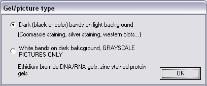
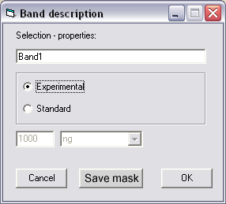
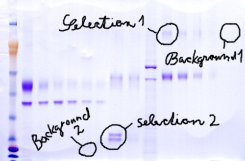
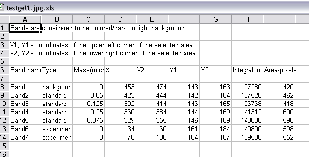
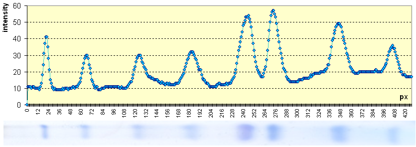

HowFat v 0.5.1.
Lucie Kalvodova, Dresden 2003-2005
Current version 0.5.1build5 (last modified 180805)
HowFat is a simple, fast, and small (single exe file of 144kb) software for uncomplicated band quantification and lane profiling tasks from gels (SDS-PAGE, DNA/RNA gels), western blots, TLC plates, and similar.
With HowFat, you can produce a lane profile with a SINGLE CLICK!
KNOWN ISSUE (euphemism for a "bug")
The selection rectangle doesn't always disappear properly...by dragging some other object over, or by dragging the HowFat out of the screen bounds, you force the left-over red lines to go away. I know this may be annoying and will fix it soon.
IT IS ESSENTIAL TO MAKE SURE THE RED LINES ARE GONE IF YOU WANT TO MAKE A NEW SELECTION IN THIS AREA. OTHERWISE THESE RED LINES ARE CONSIDERED PART OF YOUR PICTURE AND THEIR PIXEL INTENSITIES ARE COUNTED!!!
Sorry for that.
There are some more minor issues listed here.
How to use HowFat
There are 2 possible working modes for using HowFat:
- Intensity integration of selected areas (bands, group of bands)
- Lane profiling
Using HowFat to quantitate bands and groups of bands
1. Open a jpeg (.jpg, .jpeg) or bitmap (.bmp) picture using File -> Open menu
2. A dialog appears:

3. Select desired type of gel, click OK
4. In Define working mode menu, select Integral intensity calculation of selected area (Default option)
5. Start selecting bands - select bands or groups of bands to be quantified; upon release of the mouse button, a dialog apears:

6. You don't have to fill in any of the fields.
7. Clicking <OK> saves the information about the selected area. Clicking <Cancel> cancels the selection, and no information is saved
8. It is a good idea to include background selection, especially when the background varies in different regions of the gel, as shown in the following example:

To later identify the background, use the description dialog to give your background a name (eg. "upper background"), and select "Standard" option, and set mass to 0 ng.
In this example, in order to compare intensities of "Selection 1" and "Selection 2", it is desirable to correct for the uneven background by subtracting "Background 1" and "Background 2", respectively. This correction needs to be done manually.
8. When you are done selecting bands and representative areas of background, select a desired export format (ASCII text or Microsoft Excel sheet) from the Export options menu; (xls is default)
9. Click Run! menu. This will start the export process. You need to specify or accept the default file name.
10. Open the generated file. It will look somewhat similar to that:

11. Processing is now in your hands. You do not always need to include background correction. Use common sense. For gels with a very low background, do not bother! Only if the background is significant and/or is uneven, perform the following correction:
i. Calculate background intensity per pixel = intensity of the selected bacground / area in pixels (area = (X2-X1-2)x(Y2-Y1-2)). -2 is a correction for the 1px broad red selection border.
ii. Corrected intensity = intensity - (area x background intensity per pixel)
This approach works very well. You can find an example of a processed gel here.
Using HowFat to acquire lane profile
HowFat can automatically plot a lane profile:

Even though this picture shows a lane positioned horizontally, please note that the profiling only works in vertical direction. The lane was cut and rotated -90o just for demonstration purposes so that the picture could be aligned nicely under the chart.
To produce a lane profile, do the following:
- Open-->File
- Define working mode-->Intensity profile (Lane profiling)
- Select the lane in the VERTICAL direction! If your gel has horizontally oriented lanes, or if you want to profile other region in horizontal direction, you MUST first rotate the gel using some other image processing software and save the rotated image. Sorry.
- Upon releasing the mouse, a dialog prompting for a file name pops-up, and the profile es immediately generated using Microsoft Excel. Obviously, Excel must be correctly installed on your machine...If you do not have Excel installed, you need to set the Export options to Export to ASCII text file.
Limitations and known issues (yes, bugs...)
- Supported formats: bitmap, jpeg; SORRY NO TIFF SUPPORT YET
- HowFat is not checking for existing files. If you attempt to write to existing file, you may get in trouble. Will be fixed soon.
- No zoom function. Will not be fixed soon.
- The selection rectangle doesn't always disappear properly...by dragging some other object over, or by dragging the HowFat out of the screen bounds, you force the left-over red lines to go away. This is ESSENTIAL when a new selection is to be made in the affected area, otherwise their pixel values would be counted!
How it works - HowFat is no blackbox!
Calculating integral intensity of the selection
The principle is extremely simple. HowFat takes every single pixel of the selected area, converts its color value to grayscale value and sums up all the pixel intensities, thus obtaining the integral intensity of the selected area - band, which, within certain mass limits, is directly proportional to the mass in the band. Band information comprising name of the band, coordinates of the selected area, user-defined mass in case of standard (or when the selected area was set to stand for background in which case the mass shoud be set to 0), and the integral intensity is then exported into a delimited (delimitation mark is semicolon - ;)text file or directly in excel sheet file (.xls).
Lane profiling
How fat calculates the average intensity in each row of pixels (from left to right) moving from the top to the bottom of the selected area.
How to process your gel
- Open the gel picture (File -> Open). (Supported formats are bmp and jp(e)g )
- Select bands
- Press "Export band information" button
- Import the generated file into Excel - "Start import at row 4" "Fixed width"
If you need to take the background in account, you can do it manually:
However, this correction is only needed for not well destained gels or westerns with serious background, or when the band intensity is too close to the background.
©Lucie Kalvodova, 2005.